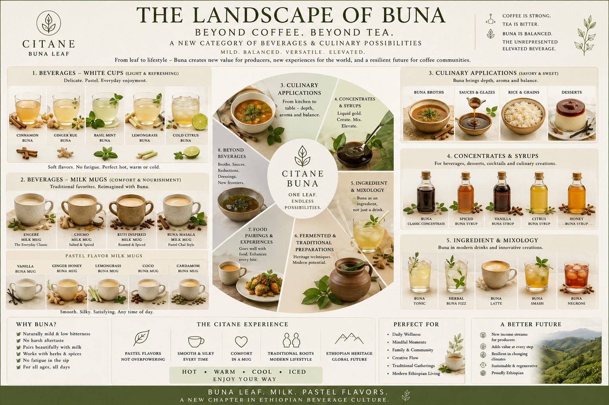

Four living paths
Engere, Chemo, Kuti, and Kawa Daun give the library cultural depth beyond a new product idea.

Coffee leaf library
Buna documents coffee leaf as beverage, tradition, sensory subject, processing material, and culinary ingredient. It should stay evidence-labelled and library-like.

Engere, Chemo, Kuti, and Kawa Daun give the library cultural depth beyond a new product idea.
Buna works well because it teaches from daily-life sensory anchors before moving into vocabulary and chemistry.
The strongest match for KoffyKraft is Buna's habit of marking tradition, experiment, and published research separately.
Buna is more mature than a normal product page. It can overwhelm a casual visitor, so the main KoffyKraft site should introduce it in one calm page and link onward. The full library should remain a specialist resource.